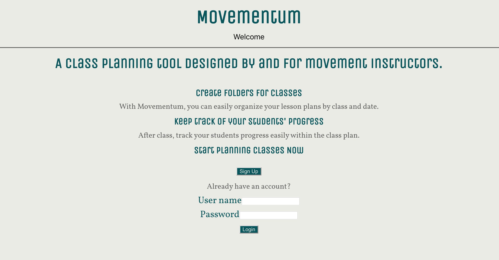
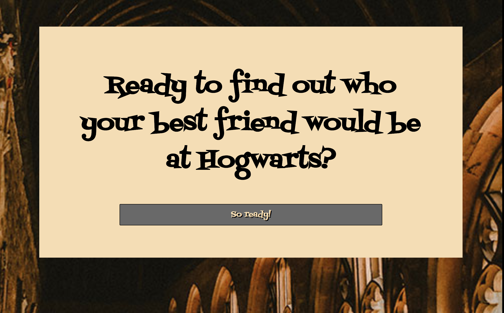

Hi New Friends! I'm Rachael, an aspiring fullstack developer.
PROJECTS
Movementum
Movementum is a class planning tool designed by and for movement instructors. It fills a gap in class and lesson planning specifically for movement instructors, like dance, yoga, and aerial arts instructors. Instructors can create folders for classes and organize their lesson plans by class. Instructors can keep track of their students' progress.
Sky Candy Curriculum Database

Project Description: Built using HTML, CSS, JavaScript, React, Node and PostgreSQL and made for Sky Candy Austin, an aerial studio in Austin, TX, this will hold all of the curriculum for the aerial classes. Sky Candy staff will be able to access, add, delete and update skills. Skills can be searched by a variety of filters including age, level, name, and apparatus.
Eventually, on a larger scope, there will be differentiated log-ins for teachers, admin, and front desk staff with different levels of access. There will also be the ability to update, add, or delete from tables other than just the skills table.
Who Would Be Your Best Friend at Hogwarts?
Project Description: Built using HTML, CSS, JavaScript and jQuery, this web app is designed for users to find out who their best friend at hogwarts would be. Users answer a series of questions which inform an API call to PotterAPI.
About Me
Hello! I am a fullstack developer specializing in JavaScript, React, Node/Express, and PostgreSQL. I am a maker at heart and became fascinated with web development when I learned I could use it make something out of nothing. Ever since I was a child putting together puzzles and creating my first app at 11- an astrology program on a Commodore 64- I’ve been fascinated by solving complex problems. This interest transferred into every job I’ve had and into my decision to make a career change into software development. When I'm not coding, you'll find me hanging out (literally!) on a trapeze at my local aerial studio or on my couch reading with my cats. My life goal is to be a crazy cat lady and with three cats, I feel I'm well on my way!